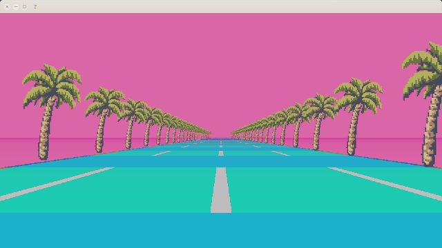

El vaporwave es un género de música electrónica, un estilo artístico y un meme de internet que surgió a mediados de la década de 2010.
Musicalmente, se caracteriza por la remasterización de muchos otros géneros musicales como el indie, seapunk, witch house, ambient y chillwave con estilos de otras décadas, principalmente de finales de los años 70 y los años 80 (como el funk, el New Age o el city pop). Artísticamente, incorpora elementos tan dispares como el software y diseño web de finales de los años 90, las imágenes pixeladas, la escultura griega clásica, la pintura renacentista, el anime, el uso de la música y lengua japonesa en general, la publicidad de épocas pasadas, el renderizado 3D y colores vivos, con temáticas de ciencia ficción y ciberpunk.
El vaporwave es un género con mucha diversidad y ambigüedad en su actitud, mensaje e interpretaciones. Muchos lo entienden como un fenómeno plenamente posmoderno: una crítica y una parodia a la sociedad de consumo, la tecnocultura y a la cultura yuppie de los años 80, mientras estéticamente exhibe una curiosa y nostálgica fascinación por los artefactos y la estética retro, las modas y tendencias de décadas pasadas así como publicidad de las mismas.
También es un estilo artístico digital. En cuanto a lo visual, el Vaporwave utiliza paisajes, obras de arte (especialmente escultura helenística, pinturas del Renacimiento y del Impresionismo), aparatos o software de los 90's y principios de los 2000's (como se ve en las portadas de los álbumes y vídeos musicales) que en conjunto se conocen como estética. La imagen asociada con Vaporwave incluye también Glitch art, diseños de páginas web de los 90, antiguas presentaciones de ordenador, estética Cassettepunk, subgénero del cyberpunk,1 uso de caracteres japoneses y otra escritura no occidental y colores llamativos. Dichos elementos suelen estar acompañados de efectos y filtros visuales que juegan con el color y la distorsión de la imagen. Un punto relevante dentro de las temáticas que se tratan en este estilo artístico es ironía, la nostalgia y la depresión, el consumismo y globalización y el conflicto de lo digital contra lo orgánico. Tal temática pareciera tratar visualmente un conflicto posmoderno representado a través de su arte digital, en el que muchas veces se habla de un nivel de confusión en relación con los límites de lo considerado virtual v/s real. Esto tiene sentido, ya que este estilo llamado Vaporwave, al que también podríamos considerar una nueva subcultura digital, es justamente gestada en los códigos de internet, la web y lo relativo al espacio virtual. Los componentes visuales de trabajos por John Foxx y otros músicos electrónicos de los años 80 son considerados influencias de la estética Vaporwave.
